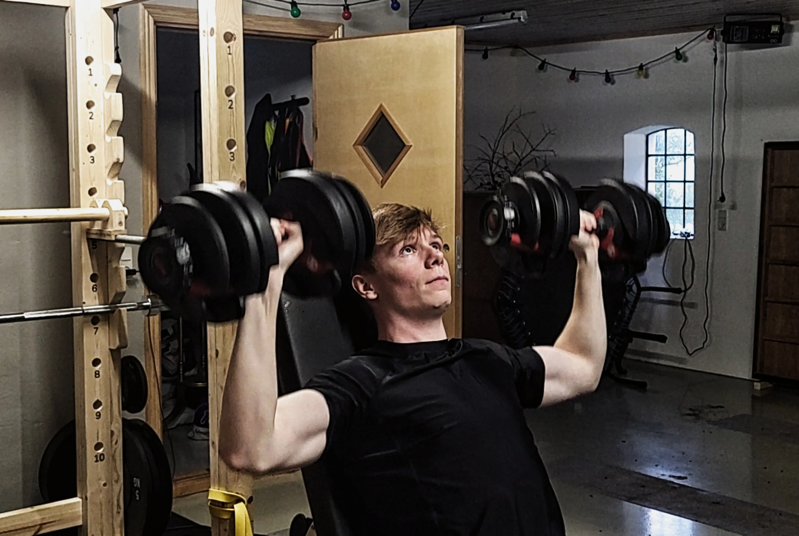
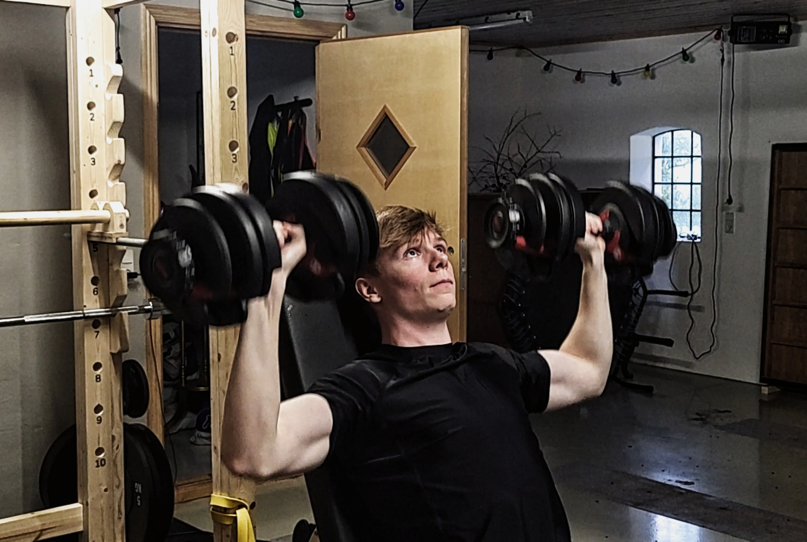

C
G
GymCheck
Styrke
Træn dine muskler!
Det begynder allerede for mange i 25-årsalderen, at muskelmassen og styrken stille og roligt forsvinder. I 50-årsalderen mister man ca. 1-1,5 procent muskelmasse årligt, hvis ikke man vedligeholder sin træning. Derfor er det vigtigt at vedligeholde og endda også opbygge muskelmasse for at holde kroppen sund, rask og klar til at møde enhver fysisk udfordring. Mængden af positive effekter ved at træne er nok til at overveje at begynde på at løfte nogle vægte og øge ens styrke.
Rich Piana - 8-timers armtræning
For dem der gerne vil udfordres og sætte sin styrke på prøve, kan man gå hen og teste bodybuilderen Rich Pianas 8-timers armtræning. Træning er i sig selv ret simpel med otte runder af to supersets, hvor man kan dele den op i træning A og træning B. Træning A indeholder fire set af ti gentagelser barbell skullcrushers sammen med fire set af ti gentagelser barbell curls. Træning B indeholder fire set af femten gentagelser dumbbell hammer curls sammen med fire set af femten gentagelser dumbbell French presses. Enhver træner ville sige, at dette er alt for høj volume for at opbygge styrke og bygge muskler. Mange, der har prøvet den langvarrige armtræning, har nævnt, at den ikke bør udføres af folk, der lige er startet på at træne. Men for de erfarne, kan det være en mulighed for at blive taget tilbage til følelsen af ens allerførste træning på grund af den overvældende ømhed.
 
